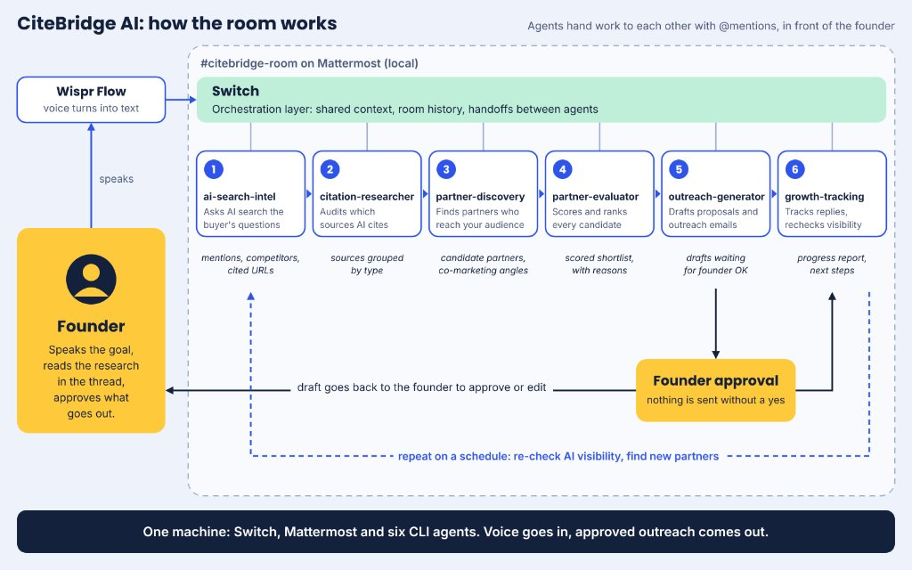

CiteBridge AI discovers how AI search engines cite sources in your niche, extracts high-authority domains, scores partnership fit, and drafts data-backed outreach — all orchestrated through a live multi-agent chat room.
Customer discovery has shifted to AI search engines. Startups face two critical gaps that existing tools don't bridge.
Startups don't know if AI search engines like ChatGPT, Perplexity, or Gemini recommend them, which competitors dominate AI answers, or which third-party blogs, newsletters, and directories the AI models cite as trusted sources.
Even when a startup knows it needs distribution, finding relevant communities, newsletters, and complementary platforms — evaluating their audience fit, and writing tailored outreach — takes weeks of manual research.
Existing GEO tools only monitor visibility gaps. Partnership tools only list contacts. CiteBridge turns citations into executable partnership workflows.
Instead of chaining static prompts in a black box, Switch AI turns local CLI coding and research agents into live, stateful teammates inside a multiplayer chat room where humans and agents collaborate side by side — identifying who influences the AI's answers and helping founders partner with them.
This is what a real CiteBridge run looks like inside #citebridge-room — agents hand off work via @mentions, with the founder steering in real-time.
Each agent is a specialist connected to the same Mattermost room. They collaborate via @mentions with human-in-the-loop steering at every step.
Scans AI search responses for target queries, maps brand visibility gaps, and identifies high-intent topic clusters.
Extracts, categorizes, and verifies the exact third-party URLs, publications, and domains cited by AI search engines.
Turns verified citation sources into actionable partner profiles, identifying editorial contacts, content formats, and collaboration angles.
Evaluates and ranks discovered partners using a weighted 100-point rubric covering Citation Impact, Relevance, Authority, and Feasibility.
Drafts personalized, citation-backed outreach emails and collaboration pitches for the highest-scoring Tier-1 partners.
Monitors post-outreach citation pickup, tracks AI Share-of-Voice (SoV) growth, and builds 30/60/90-day KPI scorecards.
Switch AI bridges local CLI agent sessions into a shared Mattermost room, enabling zero-glue-code handoffs and real-time human steering.

Multi-agent orchestrator & local control plane
Team messaging bridge via local Docker
Relational state store (Port 51725)
Local CLI agent engines
Voice-to-text human-in-the-loop input
Container orchestration (Port 51724)
Declarative room config & agent instructions
Watch the full CiteBridge AI workflow in action — from AI search analysis to outreach generation.
Watch on YouTube →Read how we built a six-agent startup growth team that lives in a chat room — agents as teammates, not pipelines.
Read on Medium →Explore the repository — room templates, agent instructions, and the full Switch AI configuration.
View on GitHub →